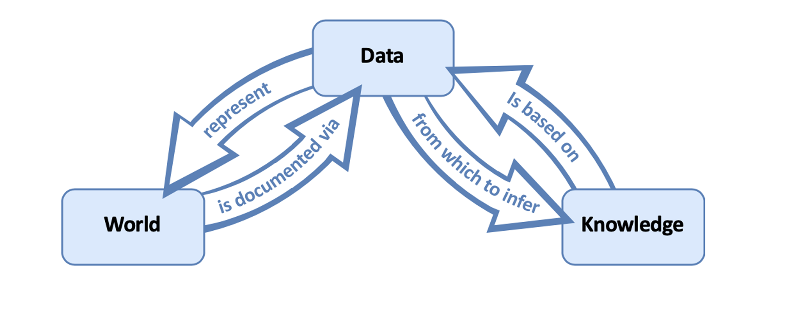

Data Science Lifecycle
motivating our selected data science lifecycle and how different lifecycles make value judgements about what exactly data represents in our world.
Though it might not be explicit, using one lifecycle or pipeline over another endorses specific views about data, data models, and their respective relationships to what we take to be knowledge about our world. Thus, the choice to use a certain data science lifecycle is value-laden.
Here, I examine two popular conceptions of the relationships between data, data models, and what we should interpret as knowledge about our world (i.e., the epistemic roles of data and data models) (Leonelli, 2018):
The representational view of data and data models
The relational view of data and data models
Examples of Data Models:
1. A simple linear regression that uses years
of education to model the expected income is a data model.
2. An algorithm that utilizes
millions of hyperparameters to predict an incarcerated individual's risk of recidivism.
3.
A data visualization that describes a relationship between variables within a sample.
In the following two subsections, I provide an explication of the representational and relational view of data and data models and some benefits of using the relational view of data and data models over the representational one. I recommend reading Leonelli (2018) for a more in-depth justification of the value of a relational view of data and data models over a representational one.
1 The Representational View
Under the representational view of data and data models, the informational content of data is fixed and independent of the researchers’ background assumptions and context. Thus, data models are important only insofar as they extract the truth from the data. Hence, under the representational view, models are either objectively correct or incorrect, depending on their ability to elucidate the truth stored in the data. In other words, data models are only relevant because they clarify the arrows between data and knowledge in the diagram below (Leonelli, 2018).

2 The Relational View
Meanwhile, under the relational view of data and data models, data is understood as any object treated as evidence for at least one claim about the world and “is possible to circulate…among individuals/groups,” (Leonelli, 2018). Consequently, the informational content of data depends on the researchers’ background assumptions and social context. So, truth is not stored in data and is instead defined by its social environment and the function it is supposed to serve. As such, data models, not data, serve as representations of our world, making data models necessary and highly influential to knowledge production under the relational view of data and data models (Leonelli, 2018).

3 The Relational vs. Representational View In-Practice
3.1 Predicting the Likelihood that a Person Buys Concert Tickets
Predicting the Likelihood of Buying Concert Tickets Suppose we are interested in predicting a person’s likelihood of buying concert tickets from a particular website. To predict a person’s likelihood, we collect data about the number of times they clicked on an advertisement for concert tickets from that particular website, the timestamps of these ad-clicks, the person’s demographic information, etc.
However, it is unclear what exactly the data we gathered actually represents. We concede that we cannot directly measure a person’s interest in buying concert tickets, but we believe that someone’s interest is relevant to them actually buying the concerts tickets. So, we decide to use the person’s number of ad-clicks as a proxy for their interest in buying concert tickets. In doing so, we take ad-click counts to represent a person’s interest in buying concert tickets from that website. However, it is possible that a person clicks on the ad because they are trying to figure out for how much to resell their previously purchased concert tickets. So, in this case, the ad-click data does not actually represent a person’s interest in buying concert tickets.
Furthermore, using certain data as evidence could influence future interactions with the world. Suppose we find that when the website displays, “less than 1% of tickets remaining”, the person is much more likely to buy concert tickets. In turn, other ticket sites adopt this strategy to sell more tickets. However, maybe we only found such a strong correlation between displaying this message and a person’s likelihood of buying tickets on our website because no other site was displaying a similar message. In turn, when other sites adopt our strategy, displaying the message “less than 1% of tickets remaining” no longer increases the person’s likelihood of buying tickets from our website. So, we have changed how people will interact with our site and buy concert tickets. Therefore, we influence people’s future interactions with ticket websites by using display message data as evidence.
Unlike the representational view, the relational view acknowledges data’s informational content is influenced by researchers’ background assumptions and social contexts. Furthermore, the relational view endorses that data can be dynamic, and what we take as knowledge from the data influences future interactions with the world. As such, the concert ticket example described above gives us reason to endorse the relational view of data and data models over the representational view.
3.2 Predicting the Likelihood that a Player Receives a Red Card in Soccer
In Silberzahn et al. (2017), 29 data analysis teams were asked to use the same data set to determine “whether soccer referees are more likely to give red cards to dark-skin-toned players than light-skin-toned players,”. Despite operating from the same data set, the final conclusions were split: 20 teams found that there was a statistically significant positive relationship, and 9 teams did not find a significant association between skin tone and the likelihood of the referee giving a red card.
The difference in chosen data model type and the relative importance of the potential predictor variables contributed to the division in the teams’ final decisions:
4 different model types were used: 15 teams used logistic models, 6 teams used Poisson models, 6 teams used linear models, and 2 teams used other types of models.
21/29 teams used unique combinations of predictor variables.
Through Silberzahn et al. (2017), we can also see how ambiguity about the data model and the relative importance of certain predictor variables also impacts what data is taken as evidence. No two teams had the same set of evidence for their claim about the relationship between skin tone and the likelihood of the referee giving a red card. As emphasized by Silberzahn et al. (2017), each team’s evidence set was defensible based on the original data set provided. Yet, these evidence sets were also subjective in the sense that they relied upon the analysts’ background assumptions, value judgments, knowledge, and social contexts.
Hence, Silberzahn et al. (2017) emphasize that data and data models should be viewed relationally rather than representationally.
4 The Final Data Science Lifecycle
Several lifecycles are compatible with a relational view of data. The final data science lifecycle I will use on this website endorses the relational view of data and data models proposed by Leonelli (2018). The diagram below shows us where paradigmatic data science practices occur in the selected lifecycle (Beaulieu & Leonelli, 2021, p. 58).
![Data Science Lifecycle under the Relational View of Data and Models conceptualized by Sabina Leonelli in 2019. The lifecycle is represented as a circle with 5 stages. Data Collection belongs to (1) Interactions with the World. Data Processing creates (2) Objects. Data Cleaning produces (3) Data. Exploratory Data Analysis is an intermediary between (3) Data and (4) Models. Machine Learning, Algorithms, Statistical Models are paradigmatic examples of (4) Models representing the World. Deployment of (4) Models creates interpretations of (5) Knowledge, which includes Communication, Visualizations, Report-Findings, and Decision making. Finally, (5) Knowledge informs further (1) Interactions with the world via Data Product Development.](images/Lifecycle-Practices.png)